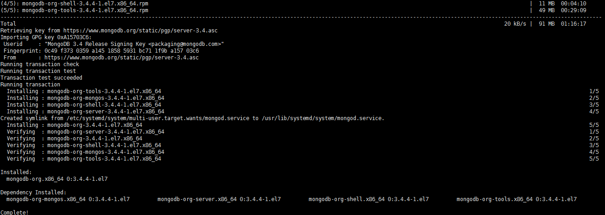
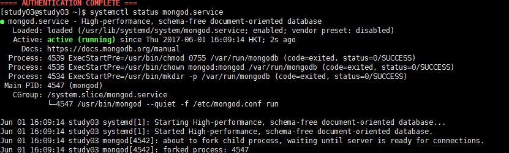
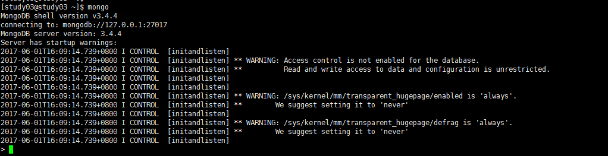
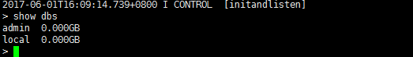
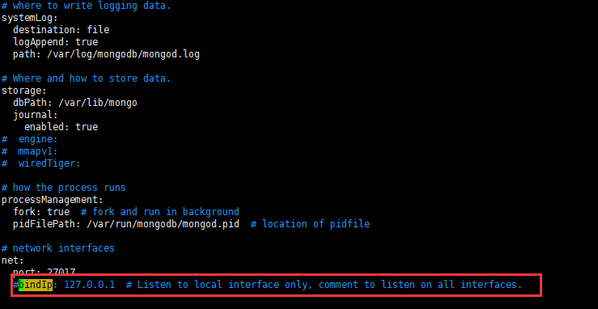

简介
MongoDB 是一个介于关系数据库和非关系数据库之间的产品，是非关系数据库当中功能最丰富，最像关系数据库的。他支持的数据结构非常松散，是类似json的bson格式，因此可以存储比较复杂的数据类型。Mongo最大的特点是他支持的查询语言非常强大，其语法有点类似于面向对象的查询语言，几乎可以实现类似关系数据库单表查询的绝大部分功能，而且还支持对数据建立索引。
Packages包说明
MongoDB官方源中包含以下几个依赖包：
mongodb-org: MongoDB元数据包，安装时自动安装下面四个组件包：
1.mongodb-org-server: 包含MongoDB守护进程和相关的配置和初始化脚本。
2.mongodb-org-mongos: 包含mongos的守护进程。
3.mongodb-org-shell: 包含mongo shell。
4.mongodb-org-tools: 包含MongoDB的工具： mongoimport, bsondump, mongodump, mongoexport, mongofiles, mongooplog, mongoperf, mongorestore, mongostat, and mongotop。
安装步骤
1.配置MongoDB的yum源
创建yum源文件：
vim /etc/yum.repos.d/mongodb-org-3.4.repo
添加以下内容：
[mongodb-org-3.4]
name=MongoDB Repository
baseurl=https://repo.mongodb.org/yum/redhat/$releasever/mongodb-org/3.4/x86_64/
gpgcheck=1
enabled=1
gpgkey=https://www.mongodb.org/static/pgp/server-3.4.asc
这里可以修改 gpgcheck=0, 省去gpg验证
安装之前先更新所有包 ：yum update （可选操作）
2.安装MongoDB
安装命令：
yum -y install mongodb-org

安装完成后
查看mongo安装位置 whereis mongod
启动mongodb ：systemctl start mongod.service
停止mongodb ：systemctl stop mongod.service
查到mongodb的状态：systemctl status mongod.service

4.外网访问需要关闭防火墙：CentOS 7.0默认使用的是firewall作为防火墙，这里改为iptables防火墙。
关闭firewall：
systemctl stop firewalld.service #停止firewall
systemctl disable firewalld.service #禁止firewall开机启动
5.设置开机启动
systemctl enable mongod.service
命令：mongo

查看数据库：show dbs

7.设置mongodb远程访问：编辑mongod.conf注释bindIp,并重启mongodb.
vim /etc/mongod.conf

重启mongodb：systemctl restart mongod.service